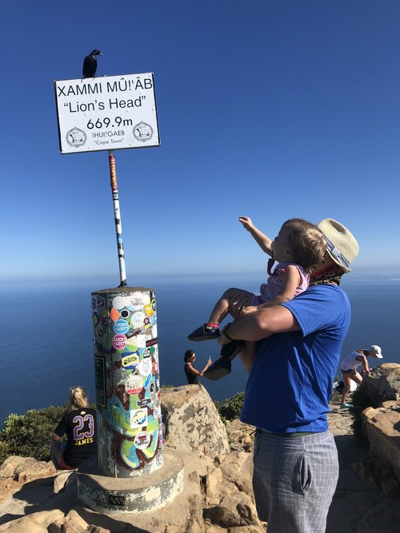
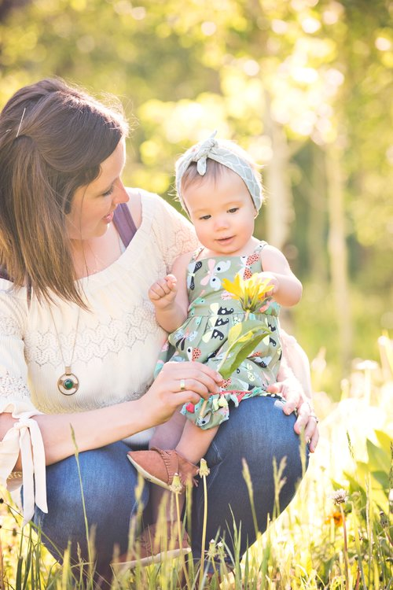

I spent my “Jesus Year” deep in the throes of the valley of the shadow of diapers.

What is a Jesus Year you ask? Growing up I heard about a Jesus year being described as your thirty-third year on earth, since scholarship consensus is that Jesus died at approximately age thirty-three.
My thirty-fourth birthday was yesterday, and it didn’t end in crucifixion,
so there is a bit of a bright spot to this blog and you don’t need to click out of here like a bat out of hell. But there have been crucibles, which any human walking planet earth can surely understand, and especially those of us primary care-givers to little humans.
I will say it was a profound year. When I turned thirty-three my littlest love (I’ll reference her as LL from here on out) and daughter, whom by the miraculous power of my womanly body was birthed into our world, was eight months old and truthfully, I was just emerging from postpartum fog. That stuff takes time. Over the course of the past year I have continued to pastor the incredible community through which you’re accessing this blog, The Table - a community of doubters + disciples together who share a dinner church and function as a studio of love. LL went from needy blob of a human to crawling, walking, talking, dancing, now testing out her first full sentences (“I see birdies” and “I want cheese”) to eating true solids and therefore pooping so very differently than the milk-diet — hence the valley of the shadow of diapers. She has taught me so very much as her little sponge-like brain has connected a thousand neuronic pathway dots and grown opinions and giggles and appetites and surprisingly nuanced facial expressions and the sweetest little made-up melodies you’ll ever hear.
Spending this Jesus Year on the learning curve of mothering and pastoring and relating has given me gifts beyond measure. With the Breath of Creation as my guide, who breathed on the primordial soup of creation and then upon Jesus at his baptism favorably identifying him as beloved, so too She breathed on me, and through those itty-bitty little lungs as LL emerged from my womb. And I have continued to breathe in and breathe out as a means to centering, grounding, steadying myself in connection to the life-giving Source of all of creation: mine, LL’s and yours.
Sleep, as anyone raising humans can attest, especially pertaining to children under the age of three, is one of the ugly places that cursed parenting demons hide...
and it was a crazy journey for our family and LL. She was just a crappy sleeper, it turns out — due to any number of physical and psychological and environmental issues and needs. And I had to show up to love her through it. There were ups, downs and mediocre chapters to this particular journey, and a lot of returning to that central Breath to guide and oxygenate me.Only in the last three weeks has LL well and truly begun sleeping through the night. As in, we put her on that mattress at the designated bedtime, and do not go back in until her little wake up musings come sweetly out of her bedroom door. I am a new woman, and she is a new toddler. She’s consistency napping for huge chunks every afternoon, and suddenly, the sleep fairies are dancing in our favor. I spent twenty hard earned months craving good sleep for both of us. The crucible of crappy sleep brought with it a profound insight.
First, a small back-track to day one of 2019. Our little family of three hiked to the top of Lion’s Head in Cape Town, South Africa. It was a strenuous, challenging anxiety-producing hike. I’ve never responded to heights the way I did on that hike - I had to push through feelings of angst like never before. But I did it, we did it together. It was hard on each of us in different ways. And it has become a metaphor for us in many ways for how this year is unfolding. I’ve chosen and used “courage” as my guide word for 2019: finding a way to live “heart-forward” in a blend of strong back, soft belly, wild heart as Brené Brown refers to it.

Fast forward a little to the beginning of Lent, which for me was an invitation to wake up: to God’s kind presence, and more deeply to myself (thank you Chris & Phileena Heuertz). To shake the sleeping self, to put aside the safety of “falling asleep” to what is real and bright and true about relationship in alignment with God’s kindness and compassion. To put aside sleep walking in favor of wakefulness to the essence of love: love of neighbor, self, earth and God. Which brings us back to the purgatory of infant and toddler sleep: one of my favorite parts of mothering LL right now is our morning routine. I hear her little morning mumbo-jumbo and open the door to the room where she has slept soundly and safely ALL NIGHT LONG. I help her out of her bed and she enters the following pattern: she turns off her sound machine, puts away her “binkie/paci/dummie/plug,” and runs into my arms asking for Mama’s milk. Sigh, it’s so precious and so predictable.
I was talking with a spiritual director yesterday - on my thirty-fourth birthday - and had a deeply illuminating epiphany. She asked me what I sensed my invitation from God was during this season - and I responded with my “wake up” analogy, which has been true of Lent thus far. Then she asked me, “Where is Jesus with you right now?” to which I had the profound realization that Jesus presence with me is right here, in the early morning light of my own wake up process. To which the spiritual director beautifully reflected back to me how all I needed was take my cues from LL and follow the pattern:
● Turn off the sound machine: choose to quiet the dulling and numbing devices
● Put away the binkie: put aside the props and crutches
● Run to Jesus: run to the source, my Breath Guide, my divine Mama’s Milk.

Wow. Thank you, kind God! Thank you, LL for being my teacher. Thank you, loving Breath for guiding me through the foggy wake up to now. Lent continues, and this I know for certain: waking up, while hard to do, is brilliantly rewarding. I will be present, I will turn off the sound machine and put way the binkie. I will run to my source with giddiness knowing the nurture I need is freely and gladly given.
I will love hard and to dizzying heights and welcome the process of being loved by many dear souls. I am amazed, humbled, grateful and in awe... So I will chose love’s path in 2019, again and again. I will pray for God to do for me what I cannot do for myself.
I will welcome the year after my Jesus year as another year for Breath to course through me. I have always loved that my birthday falls on the Equinox (Spring in the northern hemisphere, Autumn in the southern) because it represents a change of seasons, a fresh start, another opportunity to travel around the sun and to see things renewed at the cellar level. Not only was it the Spring Equinox yesterday, it was a full moon. I chose to enter my thirty-fifth year on earth ready to wake up to invite the shining light of God to create in me a deeper, wider, more cooperative and devoted heart. Ready to co-create on this path of love.
Because who wants easier? I can’t fool myself into believing I do.
Along the way to the top of Lion’s Head in Cape Town. This was before the path got too anxiety producing to take photos.
“There are a hundred paths through the world that are easier than loving. But, who wants easier?”
— Mary Oliver, New and Selected Poems, Volume One
— Mary Oliver, New and Selected Poems, Volume One
“When I was an infant at my mother’s breast, I gurgled and cooed like any infant. When I grew up, I left those infant ways for good.
We don’t yet see things clearly. We’re squinting in a fog, peering through a mist. But it won’t be long before the weather clears and the sun shines bright!
We’ll see it all then, see it all as clearly as God sees us, knowing him directly just as he knows us!
But for right now, until that completeness, we have three things to do to lead us toward that consummation: Trust steadily in God, hope unswervingly, love extravagantly. And the best of the three is love.”
— 1 Corinthians 13:11-13, The Message
We don’t yet see things clearly. We’re squinting in a fog, peering through a mist. But it won’t be long before the weather clears and the sun shines bright!
We’ll see it all then, see it all as clearly as God sees us, knowing him directly just as he knows us!
But for right now, until that completeness, we have three things to do to lead us toward that consummation: Trust steadily in God, hope unswervingly, love extravagantly. And the best of the three is love.”
— 1 Corinthians 13:11-13, The Message